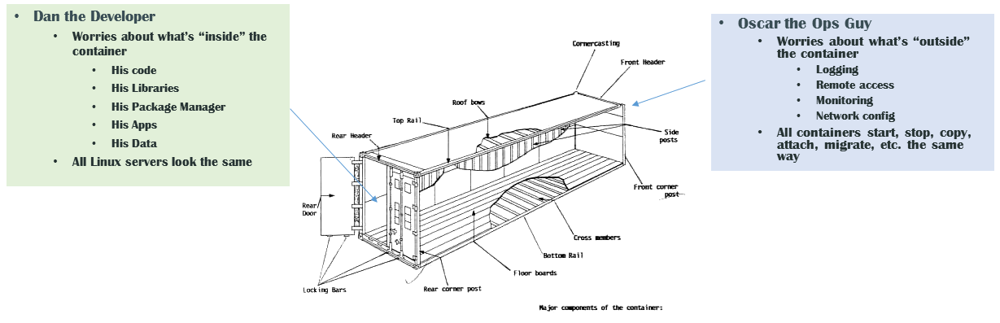

Docker

- Created by: dotCloud
- Stable since: 9 Jun 2013 (v. 1.0.0)
Some slides borrowed from here.
dotCloud - a hosting company
Any problems there?
- Are all dependencies installed?
- Are Java, lib c, python, ... in correct versions?
- Aren't libs conflicting with each other?
The Challenge

The Matrix from Hell

Cargo Transport Pre-1960

Also a Matrix from Hell

Solution: Intermodal Shipping Container

Hey! But we already have ways to standardize deploy artifacts!
*.jar approach
- Pros
- Defines java dependencies
- Relatively small
- Quick to run
- Cons
- Only for java world
- Needs a lot of setup to run
(java version, file paths, db, config files, external libs, ...)
VM approach
- Pros
- Defines all dependencies (libs, fs structure, ...)
- No setup needed to run
- VM Sandbox
- Cons
- Image is large
- Long bootup time
- Try to run 5 of them on your laptop
Is there anything in the middle?
- Light
- No setup to run
- Sandboxed
Answer: DOCKER
Docker is a Container System for Code

Matrix from Hell solved!

Docker vs VM
click
Why it Works: Separation of Concerns

Demo
intro to Docker
Image best practices
- stateless (need state -> volume)
- minimalistic (no unnecessary stuff)
- no SSHD "for debugging" (contraversive)
- one process per container (contraversive)
Adhese Dockerized
git clone git@hanz:docker
cd docker
cat README
./build_all.sh
./restart_all.sh

Demo
adhese
Build
- Plain Dockerfiles (volume containers)
- Gradle from sources (adhese, frontend)
- Gradle from puppet repo (adserver) - TODO puppetize!
Run
How to reuse? (e.g. dev, nrc, pebblemedia, ...)
We cannot hardcode adhese_app and db together
docker run -d -p 8080:8080 -p 8443:8443 -p 8000:8000 \
--name dev_adhese_app \
--volumes-from dev_adhese_data \
--link dev_db:db \
--link dev_adserver_ssh:adserver_ssh \
adhese/adhese_app
- EXPOSE 3306
- make use of $DB_PORT_3306_TCP_ADDR
Currently useful for
- end-to-end system & experiments
- how does tag.js work?
- how does my imprression end up in the db?
- testing out rotation & template related tickets
Close, but not there yet
- automated, light dev db setup (geb)
- testing auto delivery (geb + time machine)
- local mirrors (docker.adhese.org hardcoded everywhere)
Links
Need more?
Docker Belgium Meetup group
this Wednesday, 10 Sept 2014, 7:30 PM
Boulevard Louis Schmidt 29, Brussels